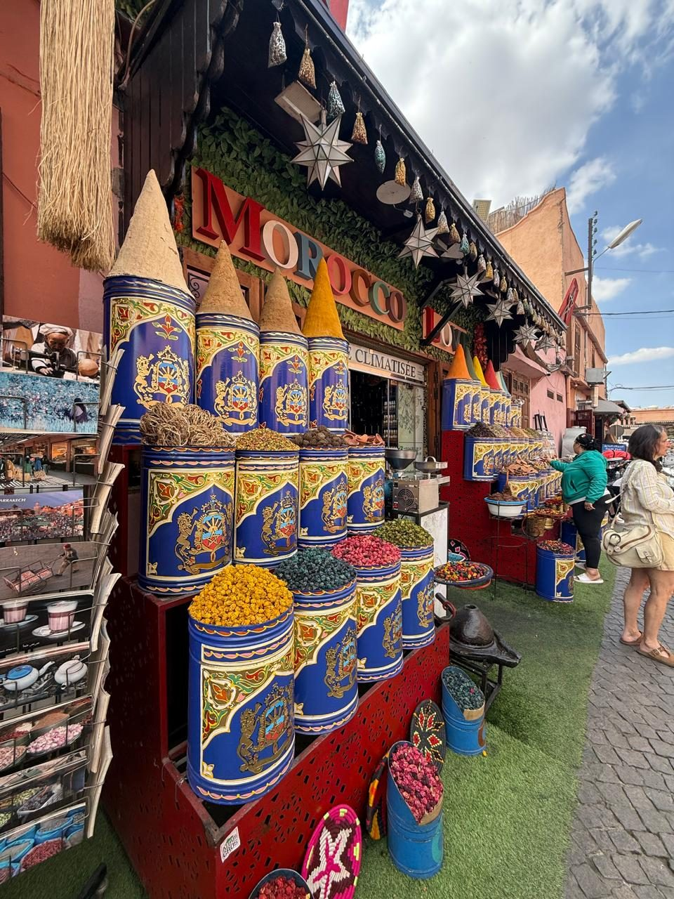
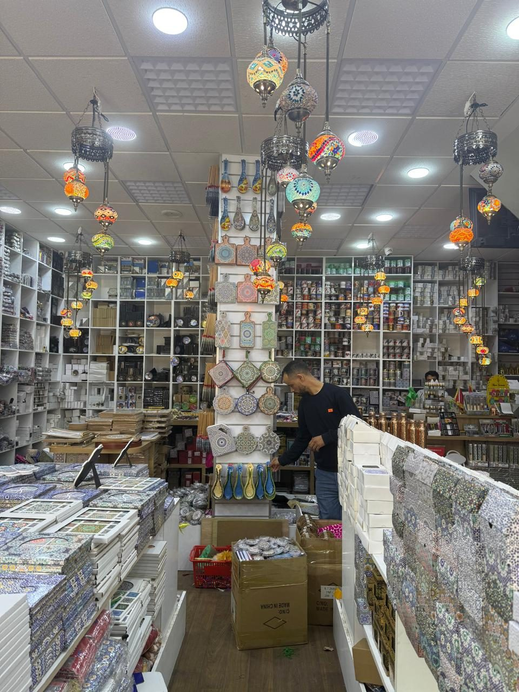
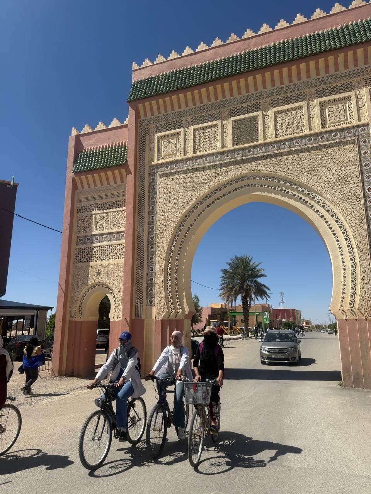
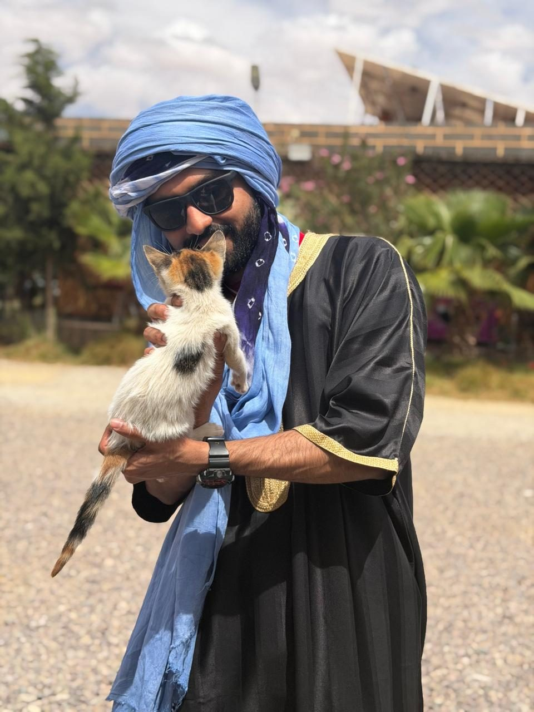

Landing in Marrakech
The trip began when I landed in Marrakech, and from there we headed south.
Where argan oil comes from
Our first stop was a local women’s cooperative where argan oil is made, and where we learned about its cultural uses.
Over the Atlas Mountains
Then came the drive through the beautiful Atlas Mountains: red rock, green valleys and big skies.


A stay with a Moroccan touch
We stayed somewhere with a proper Moroccan touch.
A night in the Sahara
Then the Sahara, and an overnight stay out in the dunes.


Into the Todgha Gorges
From the desert we went to the Todgha Gorges, walking between sheer canyon walls.
The Hollywood of Morocco
Last stop: Ouarzazate, also known as the Hollywood of Morocco, where movies like Gladiator, The Odyssey and Game of Thrones were shot.
What came home with me
A little Morocco packed into the suitcase: camels, a tea tray, a Marrakech window and a little vial of sand.




